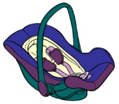
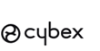
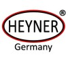

История брендов производителей детских автокресел.

В мире насчитывается несколько десятков производителей автокресел. Подобное разнообразие марок не может не радовать потребителей. Однако, широкий ассортимент и разнообразие брендов весьма осложняет выбор детского автокресла.Одни компании специализируются на производстве автокресел и занимаются этим ответственно и профессионально, а другие просто дают свои распиаренные имена автокреслам, выпускающимся, честно говоря, непонятно где и кем.
С одной стороны - громкое имя не дает гарантии отличного качества, но на имя производителя все же стоит обратить внимание хотя бы для того, чтобы не наткнуться на подделку и быть в курсе того, как выглядит логотип компании и как он правильно пишется.
Перед покупкой автокресла стоит ознакомиться с историей торговой марки, выбранного вами автокресла. Имеет ли компания вековую историю или же это фирма-однодневка, появившаяся вчера - все это имеет первостепенное значение.
RecaroИстория компании Recaro берёт своё начало в 1906 году. Основатели фирмы – братья Вильгельм и Альберт Ройттеры – были седельными мастерами, решившими открыть фабрику автомобилей и колёс, которая прославилась под именем «Ройттер». Фабрика занималась изготовлением корпусов и салонов с сиденьями для таких лидеров автомобилестроения как BMW, Bugatti, Buick, Opel и Wanderer. С 1948 года фабрика стала сотрудничать с компанией Porsche. В 1963 году производством корпусов перешло Porsche, а компания Ройттер, переименовавшись в Recaro, переключилась на производство сидений. Фабрика базировалась в Штутгарте, а после объединения с KEIPER переехала в Кирххайм, где находится и по сей день. В 1990 году в Кирххайме был открыт Recaro-центр, благодаря которому удалось сконцентрировать весь производственный процесс в одном месте. Компания Recaro является новатором в разработке автомобильных сидений. Сегодня продукция Recaro представлена ортопедическими сиденьями для автомобилей, детскими, спортивными и гоночными автокреслами, а также офисными креслами и сиденьями для коммерческого транспорта.
Компания Kiddy GmbH
История компании Kiddy берёт своё начало в 1966 году, когда мюнхенский бизнесмен Курт Вюрстл решил открыть предприятие по производству автомобильных ковриков и чехлов. Первоначально компания получила название Sicartex, но в 1976 году, после выхода в свет первого автокресла Urkiddy, фирма стала называться Kiddy. В 1978 году автокресло Urkiddy получило самые высокие оценки немецкого журнала Stiftung Warentest. С 1990 года компания Kiddy стала поставщиком детских сидений для некоторых лидеров мирового автопрома. С конца девяностых годов деятельность компании Kiddy ознаменована разработкой системы Isofix, а также линии уникальных автокресел Kiddy Life, которые были отмечены ассоциацией потребителей пластиковых товаров Fachverband Kunstoff Konsumentenwaren. С 2002 года высокими оценками тестовых организаций ADAC и Stiftung Warentest награждались также модели Kiddy Terra и Kiddy Protect. В 2006 году вышла новая линия детских автокресел Kiddy Pro. В моделях Kiddy Pro применяется инновационный материал Honey Comb, который обладает сотовой структурой, смягчающей нагрузки при ударе. С момента создания линии Pro, все модели показали только очень хорошие и отличные результаты в краш-тестах.
BeSafe
Цель компании HTS (Норвегия), производителя детских автокресел BeSafe – обеспечить комфорт и безопасность маленьким пассажирам, путешествующим в автомобиле. Компания HTS проделала долгий путь, прежде чем стала производителем надёжных детских кресел. В начале двадцатого века фабрика занималась производством шорно-седельного снаряжения. С тридцатых годов прошлого столетия компания перешла от производства конного снаряжения к автомобильному. Вплоть до восьмидесятых годов HTS производила чехлы и элементы салона для автомобилей, а в 1984 году начала разработку первого детского автокресла BeSafe. Компания накопила огромный опыт в области конструирования и производства детских автокресел. Для того, чтобы создавать надёжные сиденья, BeSafe сотрудничает с различными научно-исследовательскими институтами и медицинскими учреждениями по всей Европе. Детским автокреслам предъявляются жесткие требования, поэтому HTS инвестирует внушительные суммы в различные исследования и разработку новых технологий производства – каждый год на испытания уходят миллионы норвежских крон.
Bebe Confort
Компания по производству детских товаров Bebe Confort была основана в 1875 году во Франции. Bebe Confort работает в нескольких направлениях: производство игрушек, детской одежды, мебели для детских комнат, а также колясок и детских автомобильных кресел. Компания имеет несколько фабрик, которые расположены в ряде европейских стран, таких как Италия, Португалия, Франция и многих других. Производство оснащено по последнему слову техники, вся продукция проходит жесткий контроль и оценивается по системе стандартов ISO 9001. Товары Bebe Confort просты в использовании и уходе, надёжны, легки и отличаются оригинальным дизайном.
Romer
Пятьдесят лет компания Romer выпускает детские товары высочайшего качества, которые занимают ведущие позиции по продажам в Центральной Европе. Год основания компании Romer был ознаменован изобретением трёхточечного V-образного ремня безопасности шведским инженером-авиаконструктором Нильсом Болином. Доктор Ричард Ромер решил организовать производство таких ремней, которые в 1958 году были лишь дополнительным оборудованием. Поскольку они совершенно не подходили для применения детьми, компания Romer открыло производство детских автокресел. Завод Romer имеет собственное конструкторское бюро, где ведутся исследования в области детской безопасности. Компания гордится испытательным полигоном, на котором тестируется вся модельная линейка автокресел Romer.
Maxi-Cosi
Торговая марка Maxi Cosi принадлежит компании Dorel Netherlands, которая является одним из европейских лидеров по разработке и изготовлению товаров для детей - детских колясок, мебели, предметов для ухода за младенцами, а также продукции для домашней безопасности и детских автокресел. Головной офис компании Dorel находится в городе Хелмонде, офисы продаж - в Великобритании и Германии. Автокресла Maxi Cosi проходят жесткий контроль и проверку на прочность и устойчивость в краш-тестах, каждое автокресло имеет маркировки ECE R44/03, ECE R44/04 и отвечает европейскому стандарту качества. Приобретая кресло Maxi Cosi, покупатели могут быть уверены, что за сравнительно небольшую цену они получают высококачественный продукт кропотливой работы целого штата конструкторов, врачей-ортопедов, дизайнеров и специалистов по тестированию.
Britax
Компания Britax – это ведущий производитель детских автомобильных кресел на территории Великобритании. Использование новых технологий и высококачественных материалов сделали бренд Britax популярным у родителей всего мира. С конвейеров завода Britax сходят безопасные высококачественные автокресла, удостоенные статуса Kid's Superbrand. Конструкторами компании разработаны автокресла с повышенной боковой защитой, системой регулирования наклона сиденья, а также с уникальным индикатором натяжения ремня безопасности, исключающим ошибки при установке автокресла. Кроме того, создана специальная опора, гасящая вибрацию от неровностей дороги. В сотрудничестве с врачами-дерматологами разработаны специальные чехлы из гипоаллергенного материала, обладающие воздухопроницаемыми и влагопоглощающими свойствами. Чехлы Comfi-Flex и Comfi-Cool изготовлены из набивной ткани и поропласта, что делает их прочными, но, вместе с тем, приятными на ощупь.

Немецкая компания Cybex - известный производитель удобных и качественных детских автокресел, которые не только обеспечивают маленьким путешественникам максимально возможную безопасность, но и являются продуктом элегантного дизайна. Автокресла имеют преимущества: инновационный подголовник, усиленная боковая защита, удобные подлокотники, несколько фиксированных положений спинки, приятная текстура обивки, система внутренней вентиляции, оптимальные размеры и масса, а также невысокая цена. Все модели автокресел Cybex проходят жесткий контроль, о чем свидетельствует европейский сертификат ECE R44/04 и оценки авторитетных экспертов, таких как ADAC,OAMTC-TEST, Stiftung Warentest, ANWB.
Concord
Concord – немецкая компания с двадцатипятилетним стажем производства детских товаров. Вся продукция компании Concord отличается высоким качеством материалов, прочной конструкцией и эргономичными формами. Автокресла Concord показывают хорошие результаты в краш-тестах, о чем свидетельствуют многочисленные награды и сертификаты таких специалистов в области безопасности и детства как ADAC, OEAMTC, AutoBild, Mother&Baby, AutoZeitung. Восхищение вызывает современный дизайн детских автокресел, подбор цветов и материалов. Мягкие набивные чехлы с двойной простёжкой обеспечивают комфорт в поездке, а также несут функцию демпфера при ударе. Корпуса автокресел вентилируемые, сиденья легко устанавливаются в автомобиль. Кроме того, они устойчивы к опрокидыванию.
Casualplay
Компания Casualplay – это крупнейший производитель товаров для детей на территории Испании. Более пятидесяти лет под маркой Casualplay выпускаются высококачественные автокресла, детские коляски, люльки, сумки-переноски и прочие, необходимые малышам, вещи. В производстве товаров Casualplay отдает предпочтение экологически чистым материалам и прочным конструкциям. Безопасность и комфорт детских автокресел Casualplay сделали их популярными у родителей в тридцати странах мира. STM В 2009 году немецкой компании Storchenmuehle (STM) исполнилось 60 лет. Обладая внушительным опытом производства детских автокресел, компания гарантирует покупателям высочайшее качество, комфорт и безопасность своей продукции. Прочные конструкции автокресел в сочетании с элегантным спортивным дизайном делают детские автокресла STM популярными среди родителей европейских стран.

Компания Heyner – немецкий производитель детских автокресел и бустеров повышенной прочности. Продукция Heyner обладает большим количеством функций и выполнена в современном дизайне с использованием экологически чистых материалов. Автокресла и бустеры Heyner проходят жесткий контроль качества и соответствуют стандарту безопасности ECE-R 44/04.
Avtobaby.info